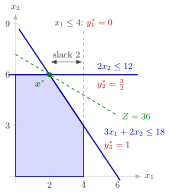

Complementary Slackness (Linear Programming)¶
Theorem¶
Theorem (complementary slackness). Let (P) be the linear program with , and (D) its dual . A feasible primal solution and a feasible dual solution are optimal if and only if
and
In words, for an optimal pair: if a dual constraint is oversatisfied, , then ; if , then dual constraint holds with equality; if a primal constraint has slack, , then ; and if , then primal constraint holds with equality.
Interpretation¶
At an optimal pair, slack on one side forces a zero on the other: a primal variable and its dual constraint cannot both have room, and neither can a dual variable and its primal constraint.

The figure shows the linear program of Example 1 below. At the constraints and are binding (solid lines), and their dual variables and are positive. The constraint (dashed) has slack , so . The green objective line touches the region only at , and is the same value.
The proof rests on one identity. For any and ,
Feasibility makes every term and a product of two nonnegative numbers, so the gap is zero exactly when every term is zero. By weak duality and strong duality, a feasible pair is optimal exactly when the gap is zero. Feasibility is essential: the equations alone can have a solution with a negative (Example 3 below).
"Complementary" means that at least one factor of each product is zero, not exactly one: a constraint can be binding and still have (Example 2 below).
In the resource-buyer reading of the dual, where is a company's capacity of resource and the price per unit that a buyer offers for it, a nonbottleneck resource, one with unused capacity at the optimal plan, has price ; and for every product that is actually produced, the resources it uses are worth exactly its unit profit. This matches the shadow prices of OR Modelling and has the same form as the condition in Math IV, with the dual variables in the role of the multipliers. In practice the theorem turns a candidate into a short system of linear equations for : is optimal exactly when that system has a dual feasible solution.
Key Results¶
- A feasible pair is optimal if and only if for all and for all .
- For an optimal pair: , and .
- A feasible is optimal if and only if some dual feasible satisfies the conditions together with : "if" by the theorem above, "only if" because an optimal exists by strong duality.
- The duality gap of a feasible pair is .
- Economic reading: the price of a nonbottleneck resource is zero, and a product made in positive quantity has unit profit equal to the value of the resources it uses.
Examples¶
1. Finding the dual optimum. For subject to , , , , take . The slacks are , so . Since , both dual constraints are tight: and , so and . The solution is nonnegative and satisfies both dual constraints, hence dual feasible, and both are optimal with value .
2. Checking a given solution. For
the point is feasible with left-hand sides , , and . The first constraint has slack, so . Since , the dual constraints and hold with equality, giving and . The third dual constraint reads , so is dual feasible, with . Hence is optimal. Note that the second constraint is binding () and yet .
3. A solution of the equations that is not dual feasible. In the linear program of Example 1 above, the corner point is feasible with slacks and . The conditions give , and , so and . This is the only satisfying the conditions, and it is not dual feasible, so is not optimal, in line with .
4. No solution at all. For subject to , , , , write the last two constraints as and . At the left-hand sides are , , : the first constraint is binding and the other two have slack, so . Since , , so ; since , , so , a contradiction. Hence is not optimal. Indeed is feasible with , and the linear program is in fact unbounded: the points with are feasible with value .
Prerequisites¶
Related Concepts¶
- Complementary Slackness
- Kuhn-Tucker Conditions with Nonnegativity Constraints
- Shadow Price in Linear Programming
- Slack Variable
- Possible Outcomes of a Primal–Dual Pair
- Dual Solution from the Simplex Tableau
Sources¶
- Math VI: Convexity and Optimization · Week 5
- H. E. Nusse and M. Dienstknecht, Math VI: Convexity and Optimization, lecture notes 2026–2027, Section 5.2
Aliases: complementary slackness theorem, LP complementary slackness, complementary slackness conditions Keywords: x_j(\boldsymbol{A}^{\top}\boldsymbol{y}-\boldsymbol{c})_j=0, y_i(\boldsymbol{b}-\boldsymbol{A}\boldsymbol{x})_i=0, \boldsymbol{b}^{\top}\boldsymbol{y}-\boldsymbol{c}^{\top}\boldsymbol{x}=\boldsymbol{x}^{\top}(\boldsymbol{A}^{\top}\boldsymbol{y}-\boldsymbol{c})+\boldsymbol{y}^{\top}(\boldsymbol{b}-\boldsymbol{A}\boldsymbol{x}), nonbottleneck resource has price zero, checking optimality of a given solution Symbols: element of, lambda, real numbers, sum
Last updated: 10 November 2026 16:43
Complementary Slackness (Linear Programming)Dual Linear ProgramWeak DualityStrong DualityBinding and Nonbinding ConstraintsComplementary SlacknessKuhn-Tucker Conditions with Nonnegativity ConstraintsShadow Price in Linear ProgrammingSlack VariablePossible Outcomes of a Primal–Dual PairDual Solution from the Simplex Tableau